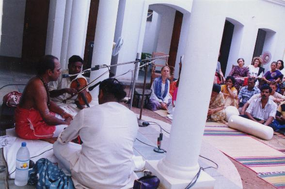

39 Audio Samples by Tiru P. Sambandan (in MP3 format)
WARNING: you need WinAmp or some equivalent program!!

- [naṭṭapāṭi]
SA: [[1:001]]
SA: [[1:010]]
- [takkarākam]
SA: [[1:023]]
- [paḻantakkarākam]
SA: [[1:060(10)]]
- [takkēci]
SA: [[1:069]]
- [kuṟiñci]
SA: [[1:077(7)]]
- [viyāḻak kuṟiñci]
SA: [[1:116]]
- [mēkarākak kuṟiñci]
SA: [[1:130]]
- [yāḻmūri]
SA: [[1:136]]
SA (2nd recording): [[1:136]]
- [intaḷam]
SA: [[2:018]]
SA: [[7:001]]
SA: [[7:004]]
- [cīkāmaram]
SA: [[2:043]]
- [kāntāram]
SA: [[2:066]]
- [piyantik kāntāram]
SA: [[2:085]]
- [naṭṭarākam]
SA: [[2:106]]
- [cevvaḻi]
SA: [[2:114]]
SA: [[2:117]]
- [kāntārapañcamam]
SA: [[3:004]]
SA: [[4:011]]
- [kolli]
SA: [[3:024]]
- [kollik kuvāṇam]
SA: [[3:042]]
- [kucikam]
SA: [[3:052]]
- [pañcamam]
SA: [[3:060 (3)]]
SA: [[3:064]]
SA: [[7:100]]
- [cātāri]
SA: [[3:092]]
- [paḻam pañcuram]
SA: [[3:113]]
- [puṟanīrmi]
SA: [[3:120]]
SA: [[3:120 (3)]]
- [antāḷik kuṟiñci]
SA: [[3:125]]
- [centurutti]
SA: [[7:095]]
- [tiru nērici]
SA: [[4:038]]
- [tiru viruttam]
SA: [[4:081]]
- [tiruk kuṟuntoki]
SA: [[5:072(7)]]
SA: [[5:090]]
- [tirut tāṇṭakam]
SA: [[6:038]]
SA: [[6:098]]